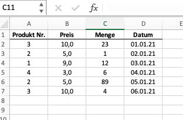

Pandas
Inhalt
Pandas¶
Wir stellen nun das für uns wohl wichtigste Modul in Python vor: Pandas. Pandas baut “im Hintergrund” auf dem im vorherigen Kapitel vorgestellten Modul numpy auf, ist jedoch für einen etwas anderen Zweck erstellt worden.
Im Kontext der Datenanalyse haben wir es oft mit tabularischen Daten zu tun, d.h. wir arbeiten mit Informationen und/oder Daten, die in Tabellen gespeichert sind. Typischerweise haben diese Informationen Beschriftungen und sind von unterschiedlichen Typen. Stellen wir uns dies in Excel vor: wir haben mehrere Spalten, jede Spalte hat eine Bezeichnung, die beschreibt, um welche Information es sich handelt. Einige Spalten haben numerische Informationen (z.B. Umsätze), andere haben text-basierte Informationen (z.B. Namen oder Orte), wieder andere haben ein Datum als Spalteninhalt. Pandas ist das Modul, welches für den Umgang mit dieser Art von Daten gemacht wurde.
Unseren bisherigen Beispiele basierten oft auf vereinfachenden Datensätzen, die nicht vergleichbar mit denen sind, die wir in Unternehmen typischerweise vorfinden. Diese Beispiele dienten zur Veranschaulichung der Grundlagen der (datengetriebenen) Programmierung und sind für die eigentliche Datenanalyse wie wir sie durchführen wollen nicht realistisch. Natürlich hat dies didaktische Gründe.
Wenn wir es mit typischen Fragestellungen im unternehmerischen Kontext (aber auch in der Forschung) zu tun haben, dann besteht ein Analyseprozess jedoch oft auf verschiedenen Schritten:
Einlesen von Daten
Daten aufbereiten und ggf. ergänzen
Daten explorativ untersuchen und zusammenfassen
Daten analysieren
Daten präsentieren in Form von Tabellen oder Graphiken
Pandas unterstützt alle diese Schritte, in dem es hierfür sinnvolle Funktionalitäten bereitstellt. Die gesamte Bandbreite an Funktionalitäten ist so groß, dass es unmöglich ist, diese im Rahmen eines Kurses zu erläutern und vorzustellen. Zusätzlich ist es so, dass Pandas am Besten im Zusammenspiel mit anderen Modulen (z.B. Numpy, aber auch Modulen zur Visualisierung) eingesetzt wird. Wir werden uns in diesem Kapitel auf selektive, aber - aus unserer Perspektive - wesentliche Funktionalitäten beschränken (müssen). Insbesondere werden wir uns darüber hinaus auch auf Techniken konzentrieren, die für den Einsatz von Pandas besonders geeignet sind.
Nützliche Ressourcen zu Pandas
Es gibt im Internet viele frei verfügbare Ressourcen zu Pandas. Eine sehr gelungene Einführung ist das Kapitel aus Python Data Science Handbook. Außerdem ist das Cheat-Sheet mit einer Zusammenfassung wichtiger Methoden sehr hilfreich.
In diesem Kapitel werden wir einige wichtige Grundlagen von Pandas vorstellen. Wir nutzen hierfür - wie in den vorherigen Kapiteln auch - kleine Beispieldaten. Im nächsten Kapitel werden wir dann realistischere Datensätze verwenden, um wichtige Konzepte quasi am “lebenden Objekt” zu erlernen. Wir glauben, dass Sie zunächst einige wichtige Grundlagen verstanden haben müssen. Um diese zu erläutern benötigen wir keine “echten” Daten. Ab einem gewissen Punkt geht es jedoch nicht mehr darum isolierte Funktionen vorzustellen, sondern vielmehr den tatsächlichen Prozess der Datenanalyse zu durchlaufen, um dann auf reale Probleme zu stoßen und praxirelevante Lösungsansätze vorzustellen.
Beginnen wir mit den Grundlagen.
Grundlagen¶
Wir stellen im Folgenden ausgewählte Grundlagen des Moduls vor. Hierbei fokussieren wir uns auf
das Importieren des Moduls
das Erstellen von
SeriesundDataframes
Importieren des Moduls¶
Bevor wir Pandas nutzen können, müssen wir das Modul zunächst importieren. Wir können hier prinzipiell wieder vorgehen, wie wir dies im Kapitel Einführung: Module ausgeführt haben. Typischerweise wird Pandas jedoch - analog zu Numpy - als ganzes Modul importiert und dann mit einer Kurzbezeichnung versehen. Es ist daher empfehlenswert, Pandas wie unten aufgeführt zu importieren.
import pandas as pd
Series und Dataframes¶
Das Herzstück von Pandas ist der sogenannte Dataframe (pd.Dataframe). Sie können sich ein Dataframe als eine Art Excel-Sheet bzw. eine Excel-Tabelle vorstellen. So wie in Excel jede Tabelle aus einer Ansammlung aus Spalten besteht, ist ein Dataframe in Pandas eine Ansammlung von Series (pd.Series).
Schauen wir uns das untenstehende Excelbeispiel an.

Die abgebildete Excel-Tabelle ist in dieser Analogie ein dataframe. Jeder ihrer Spalten eine series. Die Spalte “Preis” wäre eine Series mit floats, d.h. mit Dezimalzahlen. Die Spalte “Datum” wäre eine Series vom Typ str oder von einem Typ, der ein Datum abbilden kann (diesen Datentyp werden wir in diesem Kapitel noch kennenlernen).
Schauen wir uns an, wie wir diese Daten in pandas abbilden.
Erstellen von Series¶
Wir können - ähnlich wie beim Numpy Array - Series relativ einfach manuell erstellen. Wenn wir die Spalte “Menge” nachbilden möchten, so können wir z.B. folgendes schreiben:
s1 = pd.Series([23,1,12,6,89,4], name="Menge")
s1
0 23
1 1
2 12
3 6
4 89
5 4
Name: Menge, dtype: int64
Wir sehen, dass das Vorgehen fast identisch ist zur Erstellung eines Numpy-Arrays. Ein wichtiger Unterschied ist jedoch, dass ich der Series einen Namen geben kann. Wir haben hier die Namen “Menge” vergeben. Wir können uns den Namen wie die Spaltenbezeichnung in einer Exceltabelle vorstellen. Die in der Variable “s1” gespeicherte Series hat den Namen “Menge” und ist vom Typ int1.
Erstellen wir nun eine Series, die die Spalte “Preis” abbildet und speichern diese in der Variable “s2”. Wir schreiben den ersten Wert mit Dezimalpunkt, da die Series dann automatisch erkennt, dass es sich um den Datentyp float handelt.
s2 = pd.Series([10., 5, 9, 3, 5, 10], name="Preis") # Der Dezimalpunkt signalisiert "float"
s2
0 10.0
1 5.0
2 9.0
3 3.0
4 5.0
5 10.0
Name: Preis, dtype: float64
Wir könnten den Datentyp auch explizit angeben. Der untenstehende Code gibt z.B. an, dass die Series vom Datentyp str sein soll, so dass die Elemente Texte sind. In Pandas wird dies dann als object bezeichnet.
s3 = pd.Series([10, 5, 9, 3, 5, 10], name="Preis", dtype=str)
s3
0 10
1 5
2 9
3 3
4 5
5 10
Name: Preis, dtype: object
Erstellen von Dataframes¶
Dataframes können manuell erstellt werden oder aus externen und einzulesenden Daten erstellt werden. Wir gehen hier zunächst auf die manuelle Erstellung ein. Diese benötigen wir in der Praxis oft gar nicht, weil wir meist auf externe Daten (z.B. Excel-, CSV-, SQL- oder TXT-Dateien) zugreifen. Dennoch ist es wichtig zu verstehen, wie Dataframes manuell erstellt werden können, da dies (i) hilft, den grundsätzlichen Aufbau von Dataframes zu verstehen und (ii) oft nützlich ist, um kleinere Datensätze zu Testzwecken zu erzeugen.
Manuelle Erstellung¶
Wir können Dataframes auf verschiedene Art und Weisen erstellen. Wir gehen hier auf eine Variante ein, die aus unserer Sicht oft genuttz wird und die aller meisten Anwendungsfälle abdeckt: wir erstellen Dataframes über Dictionaries (dict). Den Datentyp haben wir im Kapitel Einführung in Python hier bereits kennengelernt.
Wir erinnern uns, dass ein Dictionary jeweils wiefolgt aufgebaut ist:
{key: values}
Wenn wir ein Dataframe mittels Dictionary erzeugen, dann werden die Keys als Spaltenbezeichnung übernommen und die Values dann als Daten unterhalb der Spaltenbezeichnung eingelesen.
Hier der Beispielcode für ein Dataframe, welcher die Spalten (in dem Falle Series) “Preis” und “Menge” beinhaltet.
dict_data = {"Menge": [23, 1, 12, 6, 89, 4], "Preis":[10., 5, 9, 3, 5, 10]}
dict_data
{'Menge': [23, 1, 12, 6, 89, 4], 'Preis': [10.0, 5, 9, 3, 5, 10]}
df = pd.DataFrame(dict_data)
df
| Menge | Preis | |
|---|---|---|
| 0 | 23 | 10.0 |
| 1 | 1 | 5.0 |
| 2 | 12 | 9.0 |
| 3 | 6 | 3.0 |
| 4 | 89 | 5.0 |
| 5 | 4 | 10.0 |
Wir sehen, dass die Keys “Menge” und “Preis” als Spaltenbezeichnung übernommen wurden. Die einzelnen Werte sind im obigen Falle Listen gewesen.
Wir können hier jedoch auch andere Datentypen nutzen. So können wir auch Series oder Arrays einfügen. Dies ist sehr praktisch, da wir im Rahmen unser Analysen mit verschiedenen Datentypen arbeiten werden.
Beispiel: Series
data = {"Menge": s1, "Preis": s2}
df2 = pd.DataFrame(data)
df2
| Menge | Preis | |
|---|---|---|
| 0 | 23 | 10.0 |
| 1 | 1 | 5.0 |
| 2 | 12 | 9.0 |
| 3 | 6 | 3.0 |
| 4 | 89 | 5.0 |
| 5 | 4 | 10.0 |
Beispiel: Arrays
import numpy as np
data = {"Menge": np.array([23, 1, 12, 6, 89, 4]), "Preis":np.array([10., 5, 9, 3, 5, 10])}
df3 = pd.DataFrame(data)
df3
| Menge | Preis | |
|---|---|---|
| 0 | 23 | 10.0 |
| 1 | 1 | 5.0 |
| 2 | 12 | 9.0 |
| 3 | 6 | 3.0 |
| 4 | 89 | 5.0 |
| 5 | 4 | 10.0 |
Einlesen von Daten¶
Wie bereits angesprochen ist es realistisch, dass wir bereits über Daten verfügen und diese in Pandas einlesen möchten. Hierfür bietet Pandas eine Vielzahl an Methoden, die es ermöglicht nahezu jeden Dateityp einzulesen. Wir werden uns in den nächsten Kapiteln auf das Einlesen von Excel- und CSV-Dateien beschränken. Das grundsätzliche Vorgehen ist jedoch - unabhängig vom Dateityp - sehr ähnlich.
Pandas bietet die Methoden zum Einlesen von externen Daten via pd.read_ an.
Wir können uns über pd.read_<tab> anzeigen lassen, welche Funktionen zur Verfügung stehen und uns die gewünschte raussuchen.
Zum Einlesen der gewünschten Daten benötigen wir typischerweise den Dateipfad, d.h. den Ort, in welchem die Datei auf dem Computer oder in der Cloud hinterlegt ist. In unserem Falle sind die Daten in einer Cloud hinterlegt, d.h. wir geben einen Link zur Cloud-Storage an.
Einlesen lokaler Dateien
Für den Fall, dass die Dateien lokal gespeichert sind, geben Sie einfach den absoluten oder relativen Pfad zur Datei ein. Haben wir bspw. folgende Struktur:
-- Ordner
---- analyse.ipynb
---- Ordner_Daten
------ daten.xlsx
Dann können Sie die Datei daten.xlsx in ihrem Notebook analyse.ipynb wie folgt einlesen:
import pandas as pd
fpath = "Ordner_Daten/daten.xlsx
pd.read_excel(fpath)
Bei dem o.g. Pfad handelt es sich um einen relativen Ordnerpfad, weil dieser relativ zu Datei in der sie sich befinden ist (in diesem Falle analyse.ipynb). Natürlich können Sie auch den gesamten Pfad angeben also z.B. c:\user\analysen\Ordner\Ordner_Daten\daten.xlsx.
file = "https://www.dropbox.com/s/oub2za2hu8yp8oj/sales1.xlsx?dl=1"
df = pd.read_excel(file)
df
| Produkt Nr. | Preis | Menge | Datum | |
|---|---|---|---|---|
| 0 | 3 | 10 | 23 | 2021-01-01 |
| 1 | 2 | 5 | 1 | 2021-01-02 |
| 2 | 1 | 9 | 12 | 2021-01-03 |
| 3 | 4 | 3 | 6 | 2021-01-04 |
| 4 | 2 | 5 | 89 | 2021-01-05 |
| 5 | 3 | 10 | 4 | 2021-01-06 |
Die jeweiligen pd.read_-Methoden haben eine Vielzahl von optionalen Parametern, die man übergeben kann. Wir werden an dieser Stelle nicht auf alle eingehen. Grundsätzlich können Sie aber quasi davon ausgehen, dass es für alle typischen Optionen, die man beim Einlesen von Daten benötigt (z.B. nur bestimmte Spalten, nur bestimmte Tabellenblätter, Auswahl der Spaltenbezeichnung, Auswahl von Datentypen, Datumsformat) eine optionale Auswahlmöglichkeit innerhalb der Methode gibt. Sie können diese via pd.read_<..>? aufrufen lassen.
Aufbau eines Dataframes¶
Ein Dataframe ist immer eine Tabelle, mit zwei Achsen:
vertikale Achse: wird als
Indexbezeichnethorizontale Achse: werden als
Columns(d.h. Spalten) bezeichnet
Der Index eines Dataframes ist standardmäßig numerisch und beginnt bei 0. Der Index ist vergleichbar mit den Zeilenbezeichnungen in Excel.
Wir greifen auf Index und Spalten wiefolgt zu:
idx = df.index
idx
RangeIndex(start=0, stop=6, step=1)
col_names = df.columns
col_names
Index(['Produkt Nr.', 'Preis', 'Menge', 'Datum'], dtype='object')
Über diese Logik können wir auch neue Werte für den Index oder die Spaltenbezeichnung erstellen.
df.index = ["a","b","c","d","e", "f"]
df
| Produkt Nr. | Preis | Menge | Datum | |
|---|---|---|---|---|
| a | 3 | 10 | 23 | 2021-01-01 |
| b | 2 | 5 | 1 | 2021-01-02 |
| c | 1 | 9 | 12 | 2021-01-03 |
| d | 4 | 3 | 6 | 2021-01-04 |
| e | 2 | 5 | 89 | 2021-01-05 |
| f | 3 | 10 | 4 | 2021-01-06 |
df.columns = ["h1", "h2", "h3", "h4"]
df
| h1 | h2 | h3 | h4 | |
|---|---|---|---|---|
| a | 3 | 10 | 23 | 2021-01-01 |
| b | 2 | 5 | 1 | 2021-01-02 |
| c | 1 | 9 | 12 | 2021-01-03 |
| d | 4 | 3 | 6 | 2021-01-04 |
| e | 2 | 5 | 89 | 2021-01-05 |
| f | 3 | 10 | 4 | 2021-01-06 |
Lassen Sie uns die alten Bezeichnungen für unsere weiteren Beispiele jedoch wieder herstellen:
df.index = idx
df.columns = col_names
df
| Produkt Nr. | Preis | Menge | Datum | |
|---|---|---|---|---|
| 0 | 3 | 10 | 23 | 2021-01-01 |
| 1 | 2 | 5 | 1 | 2021-01-02 |
| 2 | 1 | 9 | 12 | 2021-01-03 |
| 3 | 4 | 3 | 6 | 2021-01-04 |
| 4 | 2 | 5 | 89 | 2021-01-05 |
| 5 | 3 | 10 | 4 | 2021-01-06 |
Schauen wir uns nun weitere Funktionalitäten von Pandas an.
Auswahl von Daten¶
Im Rahmen einer Datenanalyse wird es vorkommen, dass wir uns auf bestimmte Zeilen oder Spalten eines Dataframes beziehen wollen. Schauen wir uns an, wie wir dies in Python machen.
Leider gibt es verschiedene Ansätze, um Daten zu selektieren. Wir werden hier ein paar gängige Ansätze vorstellen. Im Rahmen ihrer Online-Recherchen werden Sie ggf. auf weitere Ansätze stoßen. Hierbei gibt es oft kein “richtig” oder “falsch”. Schauen Sie, was für Sie ein passender Ansatz ist. Wir geben darüber hinaus an den relevanten Stellen Hinweise, wenn bestimmte Ansätze sich als besonders geeignet herausstellen.
Auswahl von Spalten¶
Ein einfacher und gängiger Weg, bestimmte Spalten zu selektieren, ist die Auswahl via Spaltenname; dies ist ja auch der Vorteil gegenüber einer rein numerischen Bibliothek wie Numpy.
Hier ein Beispiel für die Selektion einer Spalte. Das Resultat ist eine Series.
menge = df["Menge"]
menge
0 23
1 1
2 12
3 6
4 89
5 4
Name: Menge, dtype: int64
Vorsicht: Spaltenauswahl
Sie werden in verschiedenen Quellen auch die folgende Variante finden
menge = df.Menge
Der Ansatz ist grundsätzlich korrekt, jedoch nicht empfehlenswert. Hintergrund ist, dass dieser nicht funkioniert, wenn Spaltenbezeichnungen mit einer Zahl beginnen oder Leerzeichen beinhalten. Die Spalte Produkt Nr. ist so bspw. nicht selektierbar. Sie müssen also auf die von uns präferierte Variante zurückgreifen. Insofern bietet sich die von uns dargestellte Notation besser an, da diese immer funktioniert.
Natürlich können wir aber auch mehrere Spalten gleichzeitig auswählen. Wir machen dies, in dem wir eine Liste mit Spaltennamen übergeben. Das Resultat ist dann ein Dataframe.
menge_preis = df[["Menge", "Preis"]]
menge_preis
| Menge | Preis | |
|---|---|---|
| 0 | 23 | 10 |
| 1 | 1 | 5 |
| 2 | 12 | 9 |
| 3 | 6 | 3 |
| 4 | 89 | 5 |
| 5 | 4 | 10 |
Wir können die gleiche Funktionalität auch mit einer speziellen Funktion .filter erreichen.
df.filter(items=["Menge", "Preis"])
| Menge | Preis | |
|---|---|---|
| 0 | 23 | 10 |
| 1 | 1 | 5 |
| 2 | 12 | 9 |
| 3 | 6 | 3 |
| 4 | 89 | 5 |
| 5 | 4 | 10 |
Die Funktion bietet weitere Möglichkeiten. So können wir Spalten auch nach bestimmten (einfachen) Logiken filtern. Wir könnten z.B. interessiert sein an allen Spalten, die mit “P” beginnen. Dies können wir einfach erreichen mit
df.filter(like="P")
| Produkt Nr. | Preis | |
|---|---|---|
| 0 | 3 | 10 |
| 1 | 2 | 5 |
| 2 | 1 | 9 |
| 3 | 4 | 3 |
| 4 | 2 | 5 |
| 5 | 3 | 10 |
Auswahl von Zeilen¶
Sie können auch spezifische Zeilen auswählen. Die üblichste Variante ist dies über die Methoden iloc und loc zu machen.
Auswahl auf Basis von Index- oder Spaltennumerierung:
ilocAuswahl auf Basis von Index- oder Spaltenbezeichnung:
loc
Wichtig: auch in Pandas ist das erste Elemente wie bei allen anderen Datentypen für die dies relevant war sowohl für Index, als auch für Columns immer an der Stelle 0.
Gerade für Beginner ist die Auswahl via iloc und loc zunächst verwirrend. Lassen Sie uns deshalb einige typische Beispiele durchgehen.
Zur Übersicht stellen wir hier noch einmal unseren Ausgangsdatensatz dar:
df
| Produkt Nr. | Preis | Menge | Datum | |
|---|---|---|---|---|
| 0 | 3 | 10 | 23 | 2021-01-01 |
| 1 | 2 | 5 | 1 | 2021-01-02 |
| 2 | 1 | 9 | 12 | 2021-01-03 |
| 3 | 4 | 3 | 6 | 2021-01-04 |
| 4 | 2 | 5 | 89 | 2021-01-05 |
| 5 | 3 | 10 | 4 | 2021-01-06 |
Beispiel 1: Auswahl der Zeilen 0, 3 und 5
df.iloc[[0,3,5]]
| Produkt Nr. | Preis | Menge | Datum | |
|---|---|---|---|---|
| 0 | 3 | 10 | 23 | 2021-01-01 |
| 3 | 4 | 3 | 6 | 2021-01-04 |
| 5 | 3 | 10 | 4 | 2021-01-06 |
Beispiel 2: Auswahl der Zeilen 0 bis 3 (ausschließlich)
df.iloc[0:3] # erste drei Zeilen
| Produkt Nr. | Preis | Menge | Datum | |
|---|---|---|---|---|
| 0 | 3 | 10 | 23 | 2021-01-01 |
| 1 | 2 | 5 | 1 | 2021-01-02 |
| 2 | 1 | 9 | 12 | 2021-01-03 |
Sie werden feststellen, dass die grundsätzliche Logik sehr ähnlich zu der in Numpy ist. Dies ist auch kein Zufall, da Pandas auf Numpy aufsetzt und “im Hintergrund” Numpy nutzt.
Schauen wir uns zwei weitere Beispiel an.
Beispiel 3: Auswahl der Zeilen 0 bis 3 und der Spalten 0 und 2
df.iloc[0:3, [0,2]]
| Produkt Nr. | Menge | |
|---|---|---|
| 0 | 3 | 23 |
| 1 | 2 | 1 |
| 2 | 1 | 12 |
Beispiel 4: Auswahl der Zeilen 0 bis 3 und der Spalten 0 bis 3 (ausschließlich)
df.iloc[0:3, 0:3]
| Produkt Nr. | Preis | Menge | |
|---|---|---|---|
| 0 | 3 | 10 | 23 |
| 1 | 2 | 5 | 1 |
| 2 | 1 | 9 | 12 |
Die oberen Beispiele haben wir iloc genutzt: wir greifen jeweils auf die Numerierung der Spalte oder des Index zu. D.h. wir greifen auf z.B. Zeile 2 oder Spalte 0 zu.
Sobald wir auf den Index oder die Spalte mit einer bestimmten Bezeichnung zugreifen wollen, dann müssen wir loc nutzen. Dies ist insbesondere im Falle der Spalten sehr häufig der Fall.
Beispiel 5: Auswahl der Zeilen 2 bis 4 und der Spalten “Preis” und “Menge”
df.loc[2:5, ["Preis", "Menge"]] # Hier müssen wir .loc benutzen
| Preis | Menge | |
|---|---|---|
| 2 | 9 | 12 |
| 3 | 3 | 6 |
| 4 | 5 | 89 |
| 5 | 10 | 4 |
In vielen Anwendungsfällen wollen wir die Spalten über die Spaltenbezeichnungen auswählen, d.h. wir müssen loc nutzen. In weniger häufigen, aber durch aus teilweise relevanten Anwendungsfällen ist ggf. auch der Index nicht standardmäßig nummeriert. Auch dann müssen wir loc nutzen.
Hier ein Beispiel mit einem angepassten Index:
df.index = list("abcdef") # Abkürzung für ["a", "b", ..., "e"]
df
| Produkt Nr. | Preis | Menge | Datum | |
|---|---|---|---|---|
| a | 3 | 10 | 23 | 2021-01-01 |
| b | 2 | 5 | 1 | 2021-01-02 |
| c | 1 | 9 | 12 | 2021-01-03 |
| d | 4 | 3 | 6 | 2021-01-04 |
| e | 2 | 5 | 89 | 2021-01-05 |
| f | 3 | 10 | 4 | 2021-01-06 |
Beispiel 6: Auswahl der Zeilen “a” und “d” und der Spalten “Datum” und “Menge”
df.loc[["a", "d"], ["Datum", "Menge"]]
| Datum | Menge | |
|---|---|---|
| a | 2021-01-01 | 23 |
| d | 2021-01-04 | 6 |
Wie bei Numpy können wir Zeilen oder Spalten auch via booleans auswählen.
Schauen wir uns ein paar Beispiele an:
Beispiel 7: Auswahl alle Zeilen, alle Spalten für die True
spalten = [True, False, False, True] #
df.loc[:,spalten]
| Produkt Nr. | Datum | |
|---|---|---|
| a | 3 | 2021-01-01 |
| b | 2 | 2021-01-02 |
| c | 1 | 2021-01-03 |
| d | 4 | 2021-01-04 |
| e | 2 | 2021-01-05 |
| f | 3 | 2021-01-06 |
Beispiel 8: Auswahl alle Zeilen für die True, alle Spalten für die True
spalten = [True, False, False, True]
zeilen = [True, True, False, False, True, False]
df.loc[zeilen,spalten]
| Produkt Nr. | Datum | |
|---|---|---|
| a | 3 | 2021-01-01 |
| b | 2 | 2021-01-02 |
| e | 2 | 2021-01-05 |
In den beiden letzten Beispielen können wir iloc oder loc verwenden. Wir empfehlen jedoch loc zu nutzen, da dies im weiteren Verlauf noch hilfreich sein wird. Die Wahl hängt auch meist von der Art der gewählten Spaltenauswahl ab.
Im folgenden Beispiel - ein häufiges Muster der Datenselektion, wie wir im weiteren Verlauf noch feststellen werden - müssen wir wegen der Spaltenauswahl über die Spaltenbezeichnung loc nutzen.
Beispiel 9: Auswahl alle Zeilen für die True, Spalte “Menge” und “Preis”
zeilen = [True, True, False, False, True, False]
df.loc[zeilen,["Menge", "Preis"]]
| Menge | Preis | |
|---|---|---|
| a | 23 | 10 |
| b | 1 | 5 |
| e | 89 | 5 |
Das letzte Beispiel ist ein sehr typisches Beispiel im Rahmen einer Datenanalyse: wir filtern einen Datensatz hinsichtlich einer bestimmten logischen Bedingung und lassen uns dann die für uns relevaten Spalten anzeigen. Schauen wir uns dieses Vorgehen etwas detaillierter an.
Bedingungen und logische Auswahl¶
In den vorliegenden Beispielen haben wir eine explizite Auswahl getroffen und diese selbst definiert. In vielen Fällen werden wir jedoch eine Auswahl auf Basis von Bedingungen der logischen Verknüpfungen vornehmen wollen. Wir haben bereits im vorherigen Kapitel in Numpy gesehen, wie wir eine solche Auswahl treffen. In Pandas erfolgt die Vorgehensweise sehr ähnlich.
Stellen wir zunächst unseren Ausgangsdatensatz wieder her:
df.index = idx
df
| Produkt Nr. | Preis | Menge | Datum | |
|---|---|---|---|---|
| 0 | 3 | 10 | 23 | 2021-01-01 |
| 1 | 2 | 5 | 1 | 2021-01-02 |
| 2 | 1 | 9 | 12 | 2021-01-03 |
| 3 | 4 | 3 | 6 | 2021-01-04 |
| 4 | 2 | 5 | 89 | 2021-01-05 |
| 5 | 3 | 10 | 4 | 2021-01-06 |
Stellen wir uns vor, wir wollen nur alle Datensätze anzeigen lassen, bei denen die Menge > 5 ist.
Inhaltlich splittet sich diese Frage auf in zwei Teile:
finde alle Zeilen, bei denen Menge > 5
wähle alle Zeilen aus, die unter 1 identifiziert wurden
# Schritt 1: finde relevante Zeilen basierend auf logischer Bedingung
idx = df["Menge"] > 5
idx
0 True
1 False
2 True
3 True
4 True
5 False
Name: Menge, dtype: bool
# Schritt 2: wähle Zeilen aus
df.loc[idx,:]
| Produkt Nr. | Preis | Menge | Datum | |
|---|---|---|---|---|
| 0 | 3 | 10 | 23 | 2021-01-01 |
| 2 | 1 | 9 | 12 | 2021-01-03 |
| 3 | 4 | 3 | 6 | 2021-01-04 |
| 4 | 2 | 5 | 89 | 2021-01-05 |
Wir können den Schritt 2 in diesem Falle auch kürzer darstellen und folgendes schreiben:
df[idx]
| Produkt Nr. | Preis | Menge | Datum | |
|---|---|---|---|---|
| 0 | 3 | 10 | 23 | 2021-01-01 |
| 2 | 1 | 9 | 12 | 2021-01-03 |
| 3 | 4 | 3 | 6 | 2021-01-04 |
| 4 | 2 | 5 | 89 | 2021-01-05 |
Zusammenfassend kann man also kompakter schreiben:
df[df["Menge"] > 5]
| Produkt Nr. | Preis | Menge | Datum | |
|---|---|---|---|---|
| 0 | 3 | 10 | 23 | 2021-01-01 |
| 2 | 1 | 9 | 12 | 2021-01-03 |
| 3 | 4 | 3 | 6 | 2021-01-04 |
| 4 | 2 | 5 | 89 | 2021-01-05 |
Wenn wir jedoch nur auf einige bestimmte Spalten zugreifen wollen, sollten wir wieder loc nutzen, d.h. wir müssten dann z.B. folgendes schreiben
df.loc[df["Menge"] > 5, ["Menge", "Datum"]]
| Menge | Datum | |
|---|---|---|
| 0 | 23 | 2021-01-01 |
| 2 | 12 | 2021-01-03 |
| 3 | 6 | 2021-01-04 |
| 4 | 89 | 2021-01-05 |
Wir erkennen also, dass die logische Bedingung im vorliegenden Fall die Zeilen definiert, die wir extrahieren wollen.
Wie bei Numpy können wir auch wieder verschiedene logische Bedingungen miteinander verknüpfen. Die Schreibweise ist dann sehr ähnlich zu der in Numpy.
Wenn wir bspw alle Transaktion (sprich Zeilen) finden wollen, für die gilt, dass die Menge > 5 ist und der Preis == 5, dann schreiben wir:
cond = (df["Menge"] > 5) & (df["Preis"] == 5)
df[cond]
| Produkt Nr. | Preis | Menge | Datum | |
|---|---|---|---|---|
| 4 | 2 | 5 | 89 | 2021-01-05 |
oder kompakter:
df[(df["Menge"] > 5) & (df["Preis"] == 5)]
| Produkt Nr. | Preis | Menge | Datum | |
|---|---|---|---|---|
| 4 | 2 | 5 | 89 | 2021-01-05 |
Im Falle von komplexeren Bedingungen bietet Pandas auch die Möglichkeit eine dafür spezielle Methode zu nutzen: query. Mit dieser Funktion können wir typische Bedingungen etwas prägnanter formulieren.
df.query("Menge > 5 & Preis == 5")
| Produkt Nr. | Preis | Menge | Datum | |
|---|---|---|---|---|
| 4 | 2 | 5 | 89 | 2021-01-05 |
Operationen auf Daten¶
Ein typisches Muster der Datenanalyse ist, dass wir Rohdaten einlesen und diese dann korrigieren, verändern, ergänzen oder erweitern. Ein sehr triviales, aber häufig auftretendes Beispiel ist, dass wir unserem Datensatz Spalten hinzufügen:
wir ergänzen Spalten auf Basis von vorliegenden Daten: wir könnten z.B. eine neue Spalte
Umsatzberechnen auf Basis der vorliegenden Daten fürMengeundPreiswir wenden mathematische Funktionen auf Daten an: wir erstellen eine neue Spalte mit dem kumulierten Umsatz
…
Schauen wir uns an, wie wir die o.g. Veränderungen in Pandas durchführen.
df
| Produkt Nr. | Preis | Menge | Datum | |
|---|---|---|---|---|
| 0 | 3 | 10 | 23 | 2021-01-01 |
| 1 | 2 | 5 | 1 | 2021-01-02 |
| 2 | 1 | 9 | 12 | 2021-01-03 |
| 3 | 4 | 3 | 6 | 2021-01-04 |
| 4 | 2 | 5 | 89 | 2021-01-05 |
| 5 | 3 | 10 | 4 | 2021-01-06 |
Erzeugen von neuen Spalten¶
Eine neue Spalte erzeugen wir, in der wir quasi so tun, als ob diese existierte. Um z.B. eine neue Spalte Umsatz zu erzeugen machen wir folgendes:
df["Umsatz"] = df["Menge"] * df["Preis"]
df
| Produkt Nr. | Preis | Menge | Datum | Umsatz | |
|---|---|---|---|---|---|
| 0 | 3 | 10 | 23 | 2021-01-01 | 230 |
| 1 | 2 | 5 | 1 | 2021-01-02 | 5 |
| 2 | 1 | 9 | 12 | 2021-01-03 | 108 |
| 3 | 4 | 3 | 6 | 2021-01-04 | 18 |
| 4 | 2 | 5 | 89 | 2021-01-05 | 445 |
| 5 | 3 | 10 | 4 | 2021-01-06 | 40 |
Eine alternative Umsetzung - die sich in einem anderen Kontext im weiteren Verlauf noch als nützlich herausstellen wird - kann mittels der Methode assign erfolgen. Hier ein Beispiel, der eine neue Spalte Umsatz_v2 erstellt:
df = df.assign(Umsatz_v2=df["Menge"] * df["Preis"])
df
| Produkt Nr. | Preis | Menge | Datum | Umsatz | Umsatz_v2 | |
|---|---|---|---|---|---|---|
| 0 | 3 | 10 | 23 | 2021-01-01 | 230 | 230 |
| 1 | 2 | 5 | 1 | 2021-01-02 | 5 | 5 |
| 2 | 1 | 9 | 12 | 2021-01-03 | 108 | 108 |
| 3 | 4 | 3 | 6 | 2021-01-04 | 18 | 18 |
| 4 | 2 | 5 | 89 | 2021-01-05 | 445 | 445 |
| 5 | 3 | 10 | 4 | 2021-01-06 | 40 | 40 |
Wir können mit numerischen Spaltendaten genauso wie bei Numpy ganz einfach rechnen. Pandas wendet die mathematische Operation - in unserem Fall * - dann elementweise auf die gesamte Spalte an. Der oben dargestellte Code ist das Äquivalent von folgendem Beispiel in Excel:
Anwenden von komplexeren Operationen¶
Wir können so auch wesentlich komplexere Berechnungen durchführen - unsere eigenen Ideen sind quasi das Limit. Für viele typische Berechnungen stellen Pandas und/oder Numpy auch bereits Methoden zur Verfügung. Wir werden an dieser Stelle nicht im Detail darauf eingehen, sondern viele der Funktionen einführen, wenn wir diese in unseren Fallstudien benötigen.
Jedoch möchten wir ein Beispiel geben. Stellen Sie sich vor, wir wollen die kumulative Summe der Menge berechnen und in einer Spalte Menge_kum abspeichern. Wir können dies dann mit der Funktion cumsum machen und müssen hierfür keine eigene Funktion schreiben.
df["Menge_kum"] = df["Menge"].cumsum()
df
| Produkt Nr. | Preis | Menge | Datum | Umsatz | Umsatz_v2 | Menge_kum | |
|---|---|---|---|---|---|---|---|
| 0 | 3 | 10 | 23 | 2021-01-01 | 230 | 230 | 23 |
| 1 | 2 | 5 | 1 | 2021-01-02 | 5 | 5 | 24 |
| 2 | 1 | 9 | 12 | 2021-01-03 | 108 | 108 | 36 |
| 3 | 4 | 3 | 6 | 2021-01-04 | 18 | 18 | 42 |
| 4 | 2 | 5 | 89 | 2021-01-05 | 445 | 445 | 131 |
| 5 | 3 | 10 | 4 | 2021-01-06 | 40 | 40 | 135 |
Die gleiche Berechnung können wir auch via Numpy durchführen. Wir würden dann die Numpy-Funktion np.cumsum nutzen. Dies würde dann wiefolgt aussehen:
df["Menge_kum_v2"] = np.cumsum(df["Menge"])
df
| Produkt Nr. | Preis | Menge | Datum | Umsatz | Umsatz_v2 | Menge_kum | Menge_kum_v2 | |
|---|---|---|---|---|---|---|---|---|
| 0 | 3 | 10 | 23 | 2021-01-01 | 230 | 230 | 23 | 23 |
| 1 | 2 | 5 | 1 | 2021-01-02 | 5 | 5 | 24 | 24 |
| 2 | 1 | 9 | 12 | 2021-01-03 | 108 | 108 | 36 | 36 |
| 3 | 4 | 3 | 6 | 2021-01-04 | 18 | 18 | 42 | 42 |
| 4 | 2 | 5 | 89 | 2021-01-05 | 445 | 445 | 131 | 131 |
| 5 | 3 | 10 | 4 | 2021-01-06 | 40 | 40 | 135 | 135 |
Natürlich können wir auch unsere eigene Funktion schreiben und diese dann auf unseren Dataframe anwenden.
def cumsum(df, spalte):
data = []
res = 0
for i, row in df.iterrows(): # .iterrows
res = res + row[spalte]
data.append(res)
return data
cumsum(df, "Menge")
[23, 24, 36, 42, 131, 135]
df["Menge_kum_v3"] = cumsum(df, "Menge")
df
| Produkt Nr. | Preis | Menge | Datum | Umsatz | Umsatz_v2 | Menge_kum | Menge_kum_v2 | Menge_kum_v3 | |
|---|---|---|---|---|---|---|---|---|---|
| 0 | 3 | 10 | 23 | 2021-01-01 | 230 | 230 | 23 | 23 | 23 |
| 1 | 2 | 5 | 1 | 2021-01-02 | 5 | 5 | 24 | 24 | 24 |
| 2 | 1 | 9 | 12 | 2021-01-03 | 108 | 108 | 36 | 36 | 36 |
| 3 | 4 | 3 | 6 | 2021-01-04 | 18 | 18 | 42 | 42 | 42 |
| 4 | 2 | 5 | 89 | 2021-01-05 | 445 | 445 | 131 | 131 | 131 |
| 5 | 3 | 10 | 4 | 2021-01-06 | 40 | 40 | 135 | 135 | 135 |
Auch wenn wir an dieser Stelle nicht weiter auf alle verfügbaren Informationen eingehen können. Die Beispiele zeigen, dass wir sobald wir mathematische, statistische oder sonstige Funktionen auf unsere Daten anwenden wollen im Hinterkopf haben sollten, dass wir sowohl Pandas, als auch Numpy dafür nutzen können. Falls keine Funktion existiert, können wir diese selber schreiben. Wir können unsere Dataframes demnach nach belieben verändern und ergänzen.
Natürlich können wir aber auch einzelne Werte einer ganzen Spalte zuweisen. Stellen Sie sich vor, wir haben die Information, dass die vorliegenden Menge alle durch den Verkäufer “Herr Müller” verkauft wurden. Wir wollen diese Information ergänzen. Wir erstellen dann eine Spalte Verkäufer
df["Verkäufer"] = "Herr Müller"
df
| Produkt Nr. | Preis | Menge | Datum | Umsatz | Umsatz_v2 | Menge_kum | Menge_kum_v2 | Menge_kum_v3 | Verkäufer | |
|---|---|---|---|---|---|---|---|---|---|---|
| 0 | 3 | 10 | 23 | 2021-01-01 | 230 | 230 | 23 | 23 | 23 | Herr Müller |
| 1 | 2 | 5 | 1 | 2021-01-02 | 5 | 5 | 24 | 24 | 24 | Herr Müller |
| 2 | 1 | 9 | 12 | 2021-01-03 | 108 | 108 | 36 | 36 | 36 | Herr Müller |
| 3 | 4 | 3 | 6 | 2021-01-04 | 18 | 18 | 42 | 42 | 42 | Herr Müller |
| 4 | 2 | 5 | 89 | 2021-01-05 | 445 | 445 | 131 | 131 | 131 | Herr Müller |
| 5 | 3 | 10 | 4 | 2021-01-06 | 40 | 40 | 135 | 135 | 135 | Herr Müller |
Aggregationen von Daten¶
Wieder vergleichbar zu Numpy können wir Daten, die in einem Dataframe enthalten sind aggregieren und zusammenfassen. Jedoch ist es wichtig, dabei darauf zu achten, welche Datentypen im Dataframe enthalten sind. Denn es macht wenig Sinn z.B. das arithmetische Mittel von einer Datums- oder Textspalte zu berechnen.
Die Funktion .info hilft uns, einen schnellen Überblick über die Datentypen im Dataframe zu erhalten.
df.info()
<class 'pandas.core.frame.DataFrame'>
RangeIndex: 6 entries, 0 to 5
Data columns (total 10 columns):
# Column Non-Null Count Dtype
--- ------ -------------- -----
0 Produkt Nr. 6 non-null int64
1 Preis 6 non-null int64
2 Menge 6 non-null int64
3 Datum 6 non-null datetime64[ns]
4 Umsatz 6 non-null int64
5 Umsatz_v2 6 non-null int64
6 Menge_kum 6 non-null int64
7 Menge_kum_v2 6 non-null int64
8 Menge_kum_v3 6 non-null int64
9 Verkäufer 6 non-null object
dtypes: datetime64[ns](1), int64(8), object(1)
memory usage: 608.0+ bytes
Das Ergebnis der Funktion ist eine Übersicht der Spalten (Column) und des jeweiligen Datentyps (Dtype). Darüber hinaus erhalten wir die Information, ob die jeweilige Spalte fehlende Informationen beinhaltet (sog. nans: not a number). Diese könnten wir dann bei Bedarf herausfiltern oder mit anderen Werten befüllen. Auf diese Technik gehen wir an dieser Stelle jedoch nicht ein.
Die Funktion .describe liefert uns eine prägnante Übersicht an deskriptiven Statistiken. Da dies nur für numerische Spalten sinnvolle Ergebnisse liefert, werden alle anderen Spalten automatisch nicht berücksichtigt. So wird im untern Beispiel die Spalte Datum automatisch nicht berücksichtigt, da diese vom Datentyp datetime ist, d.h. ein Datumsformat hat.
df.describe()
| Produkt Nr. | Preis | Menge | Umsatz | Umsatz_v2 | Menge_kum | Menge_kum_v2 | Menge_kum_v3 | |
|---|---|---|---|---|---|---|---|---|
| count | 6.000000 | 6.00000 | 6.000000 | 6.000000 | 6.000000 | 6.000000 | 6.000000 | 6.000000 |
| mean | 2.500000 | 7.00000 | 22.500000 | 141.000000 | 141.000000 | 65.166667 | 65.166667 | 65.166667 |
| std | 1.048809 | 3.03315 | 33.494776 | 170.441779 | 170.441779 | 53.048720 | 53.048720 | 53.048720 |
| min | 1.000000 | 3.00000 | 1.000000 | 5.000000 | 5.000000 | 23.000000 | 23.000000 | 23.000000 |
| 25% | 2.000000 | 5.00000 | 4.500000 | 23.500000 | 23.500000 | 27.000000 | 27.000000 | 27.000000 |
| 50% | 2.500000 | 7.00000 | 9.000000 | 74.000000 | 74.000000 | 39.000000 | 39.000000 | 39.000000 |
| 75% | 3.000000 | 9.75000 | 20.250000 | 199.500000 | 199.500000 | 108.750000 | 108.750000 | 108.750000 |
| max | 4.000000 | 10.00000 | 89.000000 | 445.000000 | 445.000000 | 135.000000 | 135.000000 | 135.000000 |
Eine solche Übersicht ist hilfreich, um sich einen schnellen Überblick zur Verteilung der Daten zu verschaffen. Darüber hinaus können wir auch explizite Berechnungen für spezifische Spalten oder Zeilen durchführen.
Wir schauen uns dies am Beispiel des artithmetischen Mittels (engl. mean) und der Summe (engl. sum) an.
Aggregation je Spalte: Mean
cols = ["Preis", "Menge", "Umsatz"]
df[cols].mean(axis=0)
Preis 7.0
Menge 22.5
Umsatz 141.0
dtype: float64
Aggregation je Zeile: Sum
df[cols].sum(axis=1)
0 263
1 11
2 129
3 27
4 539
5 54
dtype: int64
Pandas bietet über den Zusatz axis= an, auszuwählen, ob die Funktion spalten- oder zeilenweise ausgeführt werden soll.
axis=0: Funktion wird über die Spalte angewandtaxis=1: Funktion wird über die Zeile angewandt
Hinweis: Wir können die obigen Berechnungen auch via Numpy durchführen, indem wir die jeweilige Numpy-Funktion nutzen und dieser den Dataframe oder die Series übergeben.
np.mean(df[cols], axis=0)
Preis 7.0
Menge 22.5
Umsatz 141.0
dtype: float64
Zusammenfügen von Daten¶
Oft haben wir es mit verschiedenen Datenquellen zu tun, die in irgendeiner Art und Weise kombiniert werden sollen. Beispiele hierfür sind:
mehrere Datein, die Informationen je Monat beinhalten
mehrere Dateien, die Informationen je Produkt beinhalten
mehrere Dateine, die unterschiedliche Informationen beinhalten, sich jedoch inhaltlich ergänzen
…
Wir können in Pandas Dataframes miteinander kombinieren. Wir schauen uns im Folgenden ein paar wichtige Ansätze an:
pd.concat¶
Mit der Funktion pd.concat können wir zwei oder mehr Datensätze zeilen- oder spaltenweise Verknüpfen.
Stellen wir uns vor, es gäbe zusätzlich zu unserem Beispieldatensatz noch einen weiteren Datensatz von gleichem Aufbau jedoch für einen unterschiedlichen Zeitraum.
# Ursprünglicher Datensatz
file1 = "https://www.dropbox.com/s/oub2za2hu8yp8oj/sales1.xlsx?dl=1"
df1 = pd.read_excel(file1)
df1
| Produkt Nr. | Preis | Menge | Datum | |
|---|---|---|---|---|
| 0 | 3 | 10 | 23 | 2021-01-01 |
| 1 | 2 | 5 | 1 | 2021-01-02 |
| 2 | 1 | 9 | 12 | 2021-01-03 |
| 3 | 4 | 3 | 6 | 2021-01-04 |
| 4 | 2 | 5 | 89 | 2021-01-05 |
| 5 | 3 | 10 | 4 | 2021-01-06 |
file2 = "https://www.dropbox.com/s/n01dgdrtxavicmm/sales2.xlsx?dl=1"
df2 = pd.read_excel(file2)
df2
| Produkt Nr. | Preis | Menge | Datum | |
|---|---|---|---|---|
| 0 | 3 | 10 | 3 | 2021-01-07 |
| 1 | 3 | 10 | 19 | 2021-01-08 |
| 2 | 4 | 3 | 5 | 2021-01-09 |
| 3 | 2 | 5 | 76 | 2021-01-10 |
| 4 | 1 | 9 | 45 | 2021-01-11 |
| 5 | 5 | 27 | 24 | 2021-01-12 |
Zeilenweise Verknüpfung¶
Wir können diese Datensätze nun einfach zusammenfassen. Für diese Art der Daten macht es Sinn, die Daten zeilenweise zu aggregieren, d.h. wir fügen den zweiten Datensatz (df2) unten an den ersten Datensatz an.
Wir können dies mit der Funktion pd.concat erreichen. Da wir mit dieser Funktion sowohl spalten- als auch zeilenweise verknüpfen können, müssen wir über den Parameter axis=0 angeben, dass wir eine zeilenweise Verknüpfung benötigen.
df_combined = pd.concat((df1,df2), axis=0)
df_combined
| Produkt Nr. | Preis | Menge | Datum | |
|---|---|---|---|---|
| 0 | 3 | 10 | 23 | 2021-01-01 |
| 1 | 2 | 5 | 1 | 2021-01-02 |
| 2 | 1 | 9 | 12 | 2021-01-03 |
| 3 | 4 | 3 | 6 | 2021-01-04 |
| 4 | 2 | 5 | 89 | 2021-01-05 |
| 5 | 3 | 10 | 4 | 2021-01-06 |
| 0 | 3 | 10 | 3 | 2021-01-07 |
| 1 | 3 | 10 | 19 | 2021-01-08 |
| 2 | 4 | 3 | 5 | 2021-01-09 |
| 3 | 2 | 5 | 76 | 2021-01-10 |
| 4 | 1 | 9 | 45 | 2021-01-11 |
| 5 | 5 | 27 | 24 | 2021-01-12 |
Schaut man sich das Resultat an, dann stellt man fest, dass die Daten korrekt verknüpft wurden. Jedoch ist auch der jeweilige Index verknüpft worden. Im vorliegenden Falle führt dies zu Dopplungen im Index. Dies kann zu Problemen bei der weiteren Analyse führen und ist oft nicht sinnvoll - in unserem Falle z.B. sollten wir einen durchgehenden Index bevorzugen. Wir können dies auf zwei Wege erreichen:
Variante 1: via pd.concat in dem wir den Parameter ignore_index=True übergeben
df_combined = pd.concat((df1,df2), axis=0, ignore_index=True)
df_combined
| Produkt Nr. | Preis | Menge | Datum | |
|---|---|---|---|---|
| 0 | 3 | 10 | 23 | 2021-01-01 |
| 1 | 2 | 5 | 1 | 2021-01-02 |
| 2 | 1 | 9 | 12 | 2021-01-03 |
| 3 | 4 | 3 | 6 | 2021-01-04 |
| 4 | 2 | 5 | 89 | 2021-01-05 |
| 5 | 3 | 10 | 4 | 2021-01-06 |
| 6 | 3 | 10 | 3 | 2021-01-07 |
| 7 | 3 | 10 | 19 | 2021-01-08 |
| 8 | 4 | 3 | 5 | 2021-01-09 |
| 9 | 2 | 5 | 76 | 2021-01-10 |
| 10 | 1 | 9 | 45 | 2021-01-11 |
| 11 | 5 | 27 | 24 | 2021-01-12 |
Variante 2: via reset_index
df_combined = pd.concat((df1, df2), axis=0)
df_combined
| Produkt Nr. | Preis | Menge | Datum | |
|---|---|---|---|---|
| 0 | 3 | 10 | 23 | 2021-01-01 |
| 1 | 2 | 5 | 1 | 2021-01-02 |
| 2 | 1 | 9 | 12 | 2021-01-03 |
| 3 | 4 | 3 | 6 | 2021-01-04 |
| 4 | 2 | 5 | 89 | 2021-01-05 |
| 5 | 3 | 10 | 4 | 2021-01-06 |
| 0 | 3 | 10 | 3 | 2021-01-07 |
| 1 | 3 | 10 | 19 | 2021-01-08 |
| 2 | 4 | 3 | 5 | 2021-01-09 |
| 3 | 2 | 5 | 76 | 2021-01-10 |
| 4 | 1 | 9 | 45 | 2021-01-11 |
| 5 | 5 | 27 | 24 | 2021-01-12 |
df_combined = df_combined.reset_index(drop=True)
df_combined
| Produkt Nr. | Preis | Menge | Datum | |
|---|---|---|---|---|
| 0 | 3 | 10 | 23 | 2021-01-01 |
| 1 | 2 | 5 | 1 | 2021-01-02 |
| 2 | 1 | 9 | 12 | 2021-01-03 |
| 3 | 4 | 3 | 6 | 2021-01-04 |
| 4 | 2 | 5 | 89 | 2021-01-05 |
| 5 | 3 | 10 | 4 | 2021-01-06 |
| 6 | 3 | 10 | 3 | 2021-01-07 |
| 7 | 3 | 10 | 19 | 2021-01-08 |
| 8 | 4 | 3 | 5 | 2021-01-09 |
| 9 | 2 | 5 | 76 | 2021-01-10 |
| 10 | 1 | 9 | 45 | 2021-01-11 |
| 11 | 5 | 27 | 24 | 2021-01-12 |
Mit dem Zusatz drop=True geben wir an, dass wir den alten Index nicht mehr benötigen. Wird dieser Parameter mit False belegt (Hinweis: dies ist die Standardannahme), dann wird automatisch eine neue Spalte erzeugt, die den alten Index beinhaltet.
df_combined.reset_index()
| index | Produkt Nr. | Preis | Menge | Datum | |
|---|---|---|---|---|---|
| 0 | 0 | 3 | 10 | 23 | 2021-01-01 |
| 1 | 1 | 2 | 5 | 1 | 2021-01-02 |
| 2 | 2 | 1 | 9 | 12 | 2021-01-03 |
| 3 | 3 | 4 | 3 | 6 | 2021-01-04 |
| 4 | 4 | 2 | 5 | 89 | 2021-01-05 |
| 5 | 5 | 3 | 10 | 4 | 2021-01-06 |
| 6 | 6 | 3 | 10 | 3 | 2021-01-07 |
| 7 | 7 | 3 | 10 | 19 | 2021-01-08 |
| 8 | 8 | 4 | 3 | 5 | 2021-01-09 |
| 9 | 9 | 2 | 5 | 76 | 2021-01-10 |
| 10 | 10 | 1 | 9 | 45 | 2021-01-11 |
| 11 | 11 | 5 | 27 | 24 | 2021-01-12 |
Spaltenweise Verknüpfung¶
In den o.g. Beispielen haben wir zwei Datensätze zeilenweise verknüpft. Stellen wir uns nun vor, wir haben einen weiteren Datensatz mit zusätzlichen Informationen.
Erstellen wir zunächst einen fiktiven zusätzlichen Datensatz, der Informationen über die jeweiligen Vertriebler sowie die fixen Kosten am jeweiligen Tag beinhaltet.
n = len(df_combined)
sales = np.random.choice(["Herr Müller", "Frau Meier", "Herr Schmidt"], size=n)
Kf = np.round(np.abs(np.random.randn(n) * 100),2)
data = {"Vertriebler": sales, "Kf": Kf}
df_new = pd.DataFrame(data)
df_new
| Vertriebler | Kf | |
|---|---|---|
| 0 | Frau Meier | 13.19 |
| 1 | Herr Müller | 166.36 |
| 2 | Frau Meier | 62.41 |
| 3 | Herr Müller | 0.81 |
| 4 | Frau Meier | 27.13 |
| 5 | Herr Schmidt | 51.87 |
| 6 | Herr Müller | 84.80 |
| 7 | Herr Schmidt | 25.05 |
| 8 | Frau Meier | 74.18 |
| 9 | Herr Müller | 64.87 |
| 10 | Herr Schmidt | 67.92 |
| 11 | Herr Müller | 8.24 |
Der oben dargestellte (fiktive und zufällig generierte) Datensatz beinhaltet zusätzliche Informationen je Tag. Wir wollen diese Daten nun rechts mit dem bestehenden Datensatz verknüpfen. Da wir mit dieser Funktion sowohl spalten- als auch zeilenweise verknüpfen können, müssen wir diesmal über den Parameter axis=1 angeben, dass wir eine spaltenweise Verknüpfung benötigen.
df_gesamt = pd.concat((df_combined, df_new), axis=1)
df_gesamt
| Produkt Nr. | Preis | Menge | Datum | Vertriebler | Kf | |
|---|---|---|---|---|---|---|
| 0 | 3 | 10 | 23 | 2021-01-01 | Frau Meier | 13.19 |
| 1 | 2 | 5 | 1 | 2021-01-02 | Herr Müller | 166.36 |
| 2 | 1 | 9 | 12 | 2021-01-03 | Frau Meier | 62.41 |
| 3 | 4 | 3 | 6 | 2021-01-04 | Herr Müller | 0.81 |
| 4 | 2 | 5 | 89 | 2021-01-05 | Frau Meier | 27.13 |
| 5 | 3 | 10 | 4 | 2021-01-06 | Herr Schmidt | 51.87 |
| 6 | 3 | 10 | 3 | 2021-01-07 | Herr Müller | 84.80 |
| 7 | 3 | 10 | 19 | 2021-01-08 | Herr Schmidt | 25.05 |
| 8 | 4 | 3 | 5 | 2021-01-09 | Frau Meier | 74.18 |
| 9 | 2 | 5 | 76 | 2021-01-10 | Herr Müller | 64.87 |
| 10 | 1 | 9 | 45 | 2021-01-11 | Herr Schmidt | 67.92 |
| 11 | 5 | 27 | 24 | 2021-01-12 | Herr Müller | 8.24 |
pd.merge¶
In unseren bisherigen Beispielen haben wir zwei oder mehrere Datensätze ohne Logik miteinander verknüpft. Oft ist eine Verknüpfung von Datensätzen jedoch komplexer. Stellen Sie z.B. vor, dass jeder Vertriebler für ein bestimmtes Produkt zuständig ist.
Herr Müller: Proukte 1, 3 und 5
Frau Meier: Produkt 2
Herr Schmidt: Produkt 4
Diese Information haben wir in Form eines Dataframes vorliegen.
data = {"Produkt Nr.": [1,2,3,4,5],
"Vertriebler": ["Herr Müller", "Frau Meier", "Herr Müller", "Herr Schmidt", "Herr Müller"]}
df_sales = pd.DataFrame(data)
df_sales
| Produkt Nr. | Vertriebler | |
|---|---|---|
| 0 | 1 | Herr Müller |
| 1 | 2 | Frau Meier |
| 2 | 3 | Herr Müller |
| 3 | 4 | Herr Schmidt |
| 4 | 5 | Herr Müller |
Eine Verknüpfung mit dem untenstehenden Datensatz ist nun komplexer, da wir hier weder zeilen- noch spaltenweise verknüpfen können.
df_combined
| Produkt Nr. | Preis | Menge | Datum | |
|---|---|---|---|---|
| 0 | 3 | 10 | 23 | 2021-01-01 |
| 1 | 2 | 5 | 1 | 2021-01-02 |
| 2 | 1 | 9 | 12 | 2021-01-03 |
| 3 | 4 | 3 | 6 | 2021-01-04 |
| 4 | 2 | 5 | 89 | 2021-01-05 |
| 5 | 3 | 10 | 4 | 2021-01-06 |
| 6 | 3 | 10 | 3 | 2021-01-07 |
| 7 | 3 | 10 | 19 | 2021-01-08 |
| 8 | 4 | 3 | 5 | 2021-01-09 |
| 9 | 2 | 5 | 76 | 2021-01-10 |
| 10 | 1 | 9 | 45 | 2021-01-11 |
| 11 | 5 | 27 | 24 | 2021-01-12 |
Vielmehr benötigen wir eine Verknüpfungslogik in der eine Spalte “Vertriebler” hinzugefügt wird, jedoch die Werte in Abhängigkeit der jeweiligen “Produkt Nr.” des ursprünglichen Datensatzes gewählt werden.
Beispiel: immer wenn im Datensatz df_combined bei Spalte Produkt Nr. eine 3 steht, solle in der neuen Spalte Vertriebler der Wert Herr Meier stehen.
Eine solche Verknüpfung können wir über pd.merge erzielen. Die Umsetzung sieht wie folgt aus:
df_merged = pd.merge(left=df_combined, right=df_sales, on="Produkt Nr.")
df_merged
| Produkt Nr. | Preis | Menge | Datum | Vertriebler | |
|---|---|---|---|---|---|
| 0 | 3 | 10 | 23 | 2021-01-01 | Herr Müller |
| 1 | 3 | 10 | 4 | 2021-01-06 | Herr Müller |
| 2 | 3 | 10 | 3 | 2021-01-07 | Herr Müller |
| 3 | 3 | 10 | 19 | 2021-01-08 | Herr Müller |
| 4 | 2 | 5 | 1 | 2021-01-02 | Frau Meier |
| 5 | 2 | 5 | 89 | 2021-01-05 | Frau Meier |
| 6 | 2 | 5 | 76 | 2021-01-10 | Frau Meier |
| 7 | 1 | 9 | 12 | 2021-01-03 | Herr Müller |
| 8 | 1 | 9 | 45 | 2021-01-11 | Herr Müller |
| 9 | 4 | 3 | 6 | 2021-01-04 | Herr Schmidt |
| 10 | 4 | 3 | 5 | 2021-01-09 | Herr Schmidt |
| 11 | 5 | 27 | 24 | 2021-01-12 | Herr Müller |
Wir haben der Funktion pd.merge die Information übergeben auf Basis welcher Spalte verknüpft werden soll. In unserem Falle ist die gemeinsame Spalte Produkt Nr..
Das Ergebnis ist korrekt, jedoch nun anders sortiert. Dies können wir über .sort_values korrigieren (wenn wir wollen). In diesem Fall bietet es sich dann auch an, den Index neu zu definieren, um diesen wieder fortlaufend zu haben:
df_merged.sort_values(by="Datum").reset_index(drop=True)
| Produkt Nr. | Preis | Menge | Datum | Vertriebler | |
|---|---|---|---|---|---|
| 0 | 3 | 10 | 23 | 2021-01-01 | Herr Müller |
| 1 | 2 | 5 | 1 | 2021-01-02 | Frau Meier |
| 2 | 1 | 9 | 12 | 2021-01-03 | Herr Müller |
| 3 | 4 | 3 | 6 | 2021-01-04 | Herr Schmidt |
| 4 | 2 | 5 | 89 | 2021-01-05 | Frau Meier |
| 5 | 3 | 10 | 4 | 2021-01-06 | Herr Müller |
| 6 | 3 | 10 | 3 | 2021-01-07 | Herr Müller |
| 7 | 3 | 10 | 19 | 2021-01-08 | Herr Müller |
| 8 | 4 | 3 | 5 | 2021-01-09 | Herr Schmidt |
| 9 | 2 | 5 | 76 | 2021-01-10 | Frau Meier |
| 10 | 1 | 9 | 45 | 2021-01-11 | Herr Müller |
| 11 | 5 | 27 | 24 | 2021-01-12 | Herr Müller |
Infos Verknüpfungen
Es gibt viele weitere Varianten der Verknüpfung, auf die wir an dieser Stelle nicht eingehen wollen. Typischerweise ergeben sich im Laufe einer Analyse bestimmte Fragestellungen zu geeigneten Verknüpfungen. Sie sollten sich dann die Funktionen pd.concat und pd.merge genauer anschauen.
Gruppieren von Daten¶
Wir werden im folgenden Kapitel Daten analysieren und dafür eine Reihe von Funktionen kennenlernen. Eine der wichtigsten Methoden zur strukturierten Analyse von Daten stellen wir an dieser Stelle bereits vor: .groupby.
Wir haben bereits einfache Aggregationen kennengelernt und z.B. das arithmetische Mittel über Spalten berechnet. Oft möchten wir z.B. eine solche Aggregation jedoch nicht für den gesamten Datensatz berechnen, sondern in Abhängigkeit von bestimmten anderen Spalten. In unserem oben dargestellten Datensatz ist z.B. eine Interessante Frage, welcher Vertriebler den höchsten gesamten oder durchschnittlichen täglichen Umsatz gemacht hat. Wir wollen also z.B. summieren oder mitteln in Abhängigkeit von jeweiligen Vertriebler.
Die Schritte einer solchen Analyse sind dann im Detail wie folgt:
Trenne Datensatz nach Bedingung (in unserem Falle nach Vertriebler)
Aggriegiere jeden einzelnen Datensatz
Füge aggregierte Datensätze wieder zusammen
Lassen Sie uns zunächst den Datensatz aufbereiten und die Schritte dann mit den uns bekannten Mitteln einzeln durchlaufen:
# Füge Datensatz Umsatz hinzu
df_gesamt["Umsatz"] = df_gesamt["Preis"] * df_gesamt["Menge"]
df_gesamt
| Produkt Nr. | Preis | Menge | Datum | Vertriebler | Kf | Umsatz | |
|---|---|---|---|---|---|---|---|
| 0 | 3 | 10 | 23 | 2021-01-01 | Frau Meier | 13.19 | 230 |
| 1 | 2 | 5 | 1 | 2021-01-02 | Herr Müller | 166.36 | 5 |
| 2 | 1 | 9 | 12 | 2021-01-03 | Frau Meier | 62.41 | 108 |
| 3 | 4 | 3 | 6 | 2021-01-04 | Herr Müller | 0.81 | 18 |
| 4 | 2 | 5 | 89 | 2021-01-05 | Frau Meier | 27.13 | 445 |
| 5 | 3 | 10 | 4 | 2021-01-06 | Herr Schmidt | 51.87 | 40 |
| 6 | 3 | 10 | 3 | 2021-01-07 | Herr Müller | 84.80 | 30 |
| 7 | 3 | 10 | 19 | 2021-01-08 | Herr Schmidt | 25.05 | 190 |
| 8 | 4 | 3 | 5 | 2021-01-09 | Frau Meier | 74.18 | 15 |
| 9 | 2 | 5 | 76 | 2021-01-10 | Herr Müller | 64.87 | 380 |
| 10 | 1 | 9 | 45 | 2021-01-11 | Herr Schmidt | 67.92 | 405 |
| 11 | 5 | 27 | 24 | 2021-01-12 | Herr Müller | 8.24 | 648 |
Manuell¶
Schritt 1: Trennung nach Vertriebler
df1 = df_gesamt[df_gesamt["Vertriebler"] == "Herr Müller"]
df2 = df_gesamt[df_gesamt["Vertriebler"] == "Herr Schmidt"]
df3 = df_gesamt[df_gesamt["Vertriebler"] == "Frau Meier"]
# Beispiel: df3
df3
| Produkt Nr. | Preis | Menge | Datum | Vertriebler | Kf | Umsatz | |
|---|---|---|---|---|---|---|---|
| 0 | 3 | 10 | 23 | 2021-01-01 | Frau Meier | 13.19 | 230 |
| 2 | 1 | 9 | 12 | 2021-01-03 | Frau Meier | 62.41 | 108 |
| 4 | 2 | 5 | 89 | 2021-01-05 | Frau Meier | 27.13 | 445 |
| 8 | 4 | 3 | 5 | 2021-01-09 | Frau Meier | 74.18 | 15 |
Schritt 2: berechne Gesamtumsatz
müller = df1["Umsatz"].sum()
schmidt = df2["Umsatz"].sum()
meier = df3["Umsatz"].sum()
müller, schmidt, meier
(1081, 635, 798)
Schritt 3: Zusammenfügen der Daten
data = {"Vertriebler": ["Herr Müller", "Herr Schmidt", "Frau Meier"], "Umsatz_gesamt": [müller, schmidt, meier]}
pd.DataFrame(data)
| Vertriebler | Umsatz_gesamt | |
|---|---|---|
| 0 | Herr Müller | 1081 |
| 1 | Herr Schmidt | 635 |
| 2 | Frau Meier | 798 |
via .groupby¶
Der gesamte obige Code kann durch eine einfache Zeile ersetzt werden
df_gesamt.groupby("Vertriebler").agg({"Umsatz": np.sum})
| Umsatz | |
|---|---|
| Vertriebler | |
| Frau Meier | 798 |
| Herr Müller | 1081 |
| Herr Schmidt | 635 |
Das oben vorgestellt Vorgehen ist wesentlich einfacher und folgt immer der gleichen Logik. Via .groupby wird angegeben, nach welcher Spalte oder nach welchen Spalten der Datensatz aufgeteilt werden soll. Das Resultat ist ein neuer Datentyp DataFrameGroupBy. Auf diesen Datentyp können dann neue Funktionen angewendet werden, die dann automatisch für jede einzelne Gruppe berechnet werden. Mit diesem Muster können viele scheinbar komplexe Berechnungen sehr schnell und übersichtlich durchgeführt werden.
Hier ein weiteres Beispiel: wir berechnen den durchschnittlichen Umsatz je Produkt
df_gesamt.groupby("Produkt Nr.").agg({"Umsatz": np.mean})
| Umsatz | |
|---|---|
| Produkt Nr. | |
| 1 | 256.500000 |
| 2 | 276.666667 |
| 3 | 122.500000 |
| 4 | 16.500000 |
| 5 | 648.000000 |
- 1
Hinweis: genauer gesagt vom Typ
int64. Die Zahl hinterintmacht deutlich, dass es eine 64-bit Integer ist und gibt uns damit Aufschluss über den abbildbaren Wertebereich (und damit auch über den benötigten Speicher) des Datentyps. Diese technischen Feinheiten sind für unsere Zwecke an dieser Stelle nicht relevant. Weitere Informationen dazu finden Sie z.B. hier.